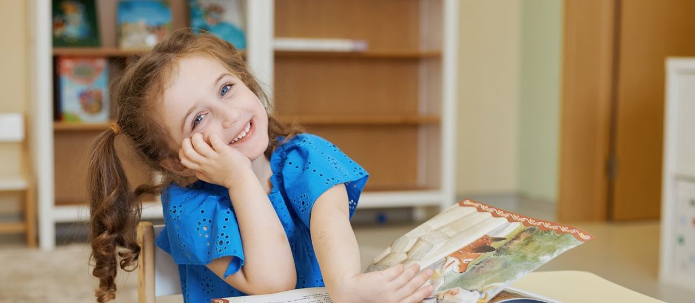
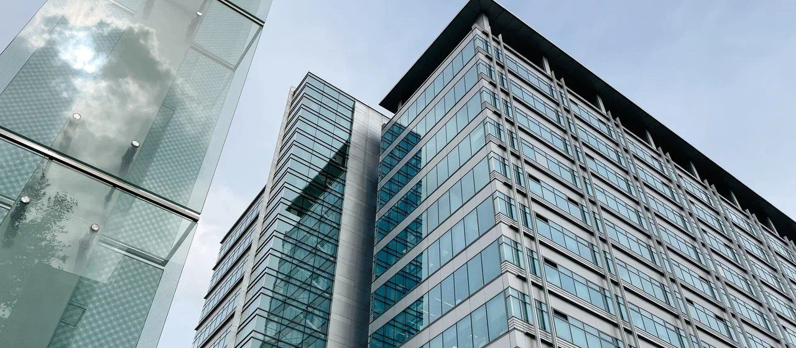

Маленькие классы: почему 12 учеников лучше 30 и где это не работает


«Маленькие классы» пишут на сайте все частные школы, и родители кивают: понятно, что двенадцать лучше тридцати. Но что именно меняется, когда в классе в два с половиной раза меньше детей, обычно никто не объясняет. Ниже разбираем по минутам и ситуациям, что даёт маленький класс, где он не поможет и как проверить, что в школе классы действительно маленькие, включая тот, куда пойдёт ваш ребёнок.

- Главное, что покупает маленький класс: время учителя на каждого ребёнка. При 30 учениках это полторы минуты за урок, при 12 почти четыре.
- Меняется темп, количество вопросов, отношение к ошибке и дисциплина.
- Маленький класс не спасает от слабого учителя и не заменяет программу.
01Арифметика урока
Урок длится 45 минут. Из них минут десять уходит на организацию: начало, объяснение задания, запись домашнего. Остаётся 35 минут работы с детьми.
При тридцати учениках это 70 секунд на каждого. Учитель физически не может спросить всех, проверить у всех тетради и заметить, кто не понял. Он работает с классом как с целым: объясняет, спрашивает трёх-четырёх, задаёт всем одно и то же.
При двенадцати учениках это почти три минуты на каждого. За урок можно опросить всех, подойти к каждому во время самостоятельной работы, заметить, что Вера второй раз ошибается в одном и том же месте, и разобрать это с ней сразу.
За учебный год разница набегает в тысячи минут индивидуального внимания. Это единственное преимущество маленького класса, которое нельзя компенсировать ни программой, ни оборудованием, ни репетиторами.
02Что меняется на практике
Темп подстраивается под детей
В большом классе учитель идёт по программе со средней скоростью. Кто быстрее, скучает. Кто медленнее, отстаёт и не догоняет. В маленьком классе учитель видит, что шестеро поняли, а трое нет, и может дать первым задачу сложнее, а со вторыми разобрать ещё раз. Не идеально, но возможно.
Ребёнок задаёт вопросы
В классе из тридцати ребёнок поднимает руку, а очередь не доходит. Через месяц он перестаёт поднимать. В классе из двенадцати очередь доходит всегда, и привычка спрашивать сохраняется. Это критично для тревожных детей и для тех, кто медленно формулирует.
Ошибка перестаёт быть публичной
Ошибиться при тридцати одноклассниках страшно. При двенадцати, которые все друг друга знают, гораздо меньше. Учитель успевает разобрать ошибку спокойно, без спешки к следующему. Как педагог должен относиться к ошибкам, написали в статье про признаки хорошего учителя.
Дисциплина держится на отношениях
В большом классе порядок держится на правилах и голосе учителя. В маленьком на том, что все друг друга знают и учитель знает каждого. Кричать не нужно, потому что нарушителя видно сразу и с ним можно поговорить.
Все дружат со всеми
В классе из тридцати образуются группы, и всегда есть те, кто не попал ни в одну. В классе из двенадцати группы тоже бывают, но изолированных детей меньше: слишком мало людей, чтобы кого-то не заметить. Это не гарантия от конфликтов, но их проще увидеть и разобрать.

03Где маленький класс не помогает
Честно, чтобы не было завышенных ожиданий.
Двенадцать детей и слабый учитель это двенадцать детей, которым скучно. Размер класса умножает качество педагога, заменить его он не может.
В классе из двенадцати меньше сильных учеников, на которых можно равняться. Для ребёнка, которому нужен вызов, это может быть минусом. Хорошая школа компенсирует это олимпиадами, межклассными проектами и параллелями.
Двенадцать человек на одиннадцать лет это мало. Если ребёнок не сошёлся с классом, деваться ему некуда. Школа должна давать общение за пределами класса: кружки, спорт, общешкольные события.
Зарплата учителя делится на двенадцать семей вместо тридцати. Маленький класс это главное, за что родители платят в частной школе.
04Какой размер оптимален
Исследования расходятся, практика более-менее сходится. До 15 человек для начальной школы, до 18 для средней и старшей. Меньше восьми уже плохо: слишком узко для общения и соревнования. Больше двадцати теряется главное преимущество.
05Как проверить реальную наполняемость
Школы любят цифру «в среднем». Средний размер класса 12 может означать, что в 1 классе 6 детей, а в 5 классе 20. Спрашивайте конкретно.
Сколько детей сейчас в том классе, куда пойдёт ваш ребёнок?
Какой максимум прописан в договоре?
Сколько взрослых работает с классом на уроке: только учитель или учитель и тьютор?
Можно ли посидеть на уроке и посчитать самим?
Если максимум в договоре не прописан, класс может вырасти до любого размера. О том, что делает тьютор в классе, рассказали отдельно.
В классах до [уточнить: число] учеников. В начальной школе с классом работают учитель и тьютор. Максимальная наполняемость прописана в договоре. Посидеть на уроке и посчитать можно на экскурсии в учебный день.
06Частые вопросы
Нет, если учитель держит требования. Лень появляется от скуки, размер класса тут ни при чём.
Сильный учитель. Но сильный учитель с 12 учениками лучше обоих вариантов. Ищите сочетание.
Можно. Дети из маленьких классов обычно переходят легко: у них сохранилась привычка спрашивать и не бояться.
07Что дальше
Приходите на экскурсию в учебный день, зайдите в класс и посчитайте сами. Телефон +7 (495) 152-22-21.